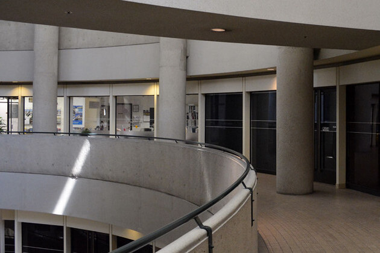

"Predestination" is a mind-bending science fiction thriller directed by the Spierig brothers, Michael and Peter. Based on Robert A. Heinlein's short story "All You Zombies," the film explores themes of identity, fate, and the paradoxes of time travel. The story follows a time-traveling Temporal Agent (Ethan Hawke) on his final mission, which involves apprehending a mysterious terrorist known as the Fizzle Bomber.
The film opens with a failed attempt by the Temporal Agent to stop the Fizzle Bomber, resulting in severe injuries. After recovering, the agent assumes the guise of a bartender in the 1970s to intercept a disillusioned and enigmatic individual known as The Unmarried Mother (Sarah Snook). Through a series of flashbacks and revelations, the bartender learns of The Unmarried Mother's tumultuous life, beginning as an orphaned girl named Jane who undergoes a series of extraordinary transformations
The narrative intricately weaves together Jane's past, present, and future, revealing shocking twists and connections that challenge the audience's perceptions of identity and destiny. The film delves into the complexities of time travel, exploring the consequences of altering events and the inevitability of certain outcomes.
"Predestination" is a visually striking film, with atmospheric cinematography by Ben Nott that captures the mood and tone of each time period depicted. The production design effectively evokes the different eras, from the post-war 1940s to the gritty 1970s and the futuristic settings of the Temporal Agency. The film's visual effects are seamlessly integrated, enhancing the time travel sequences and the overall sci-fi aesthetic without overshadowing the story's emotional core.
"Predestination" tackles complex themes, including the nature of identity, the fluidity of gender, and the philosophical implications of time travel. The film's exploration of the predestination paradox, where an event is both the cause and effect of itself, challenges the audience to reconsider the concept of free will. The story's intricate structure and carefully crafted narrative twists make it a compelling puzzle that rewards close attention and multiple viewings.
The film also delves into the emotional and psychological toll of being a time traveler, highlighting the loneliness and existential questions that arise from living outside the conventional flow of time. The character of Jane/The Unmarried Mother serves as a poignant exploration of self-discovery and acceptance, as they grapple with their unique identity and the profound impact of their choices.
"Predestination" was filmed primarily in Australia, taking advantage of the country's diverse locations to create the film's various settings:
Melbourne, Victoria: The majority of the film was shot in Melbourne, utilizing its urban landscape to represent different time periods. The city's historic and modern architecture provided a versatile backdrop for the film's scenes, from the gritty streets of the 1970s to the more futuristic elements.
Docklands Studios Melbourne: Many of the interior scenes, including those set in the Temporal Agency and other key locations, were filmed at Docklands Studios. This allowed the filmmakers to create controlled environments that matched the film's distinct aesthetic requirements.
USA: Additional scenes were shot in various locations across the United States. The interiors of the NASA facilities were filmed at the Los Angeles Convention Center in California. The beautiful interiors of the Endurance spaceship were created on soundstages in Los Angeles, while the exterior farm scenes were filmed in Southern California.
"Predestination" is a thought-provoking and emotionally resonant sci-fi thriller that stands out for its ambitious storytelling and exceptional performances. The Spierig brothers skillfully adapt Heinlein's short story, expanding it into a complex and engaging narrative that challenges viewers' perceptions of time, identity, and destiny. With its striking visuals, compelling performances, and mind-bending plot twists, "Predestination" is a must-watch for fans of intelligent and thought-provoking science fiction.
Overall, "Predestination" is a cinematic experience that leaves a lasting impression, inviting audiences to ponder the mysteries of time and the human condition long after the credits roll.